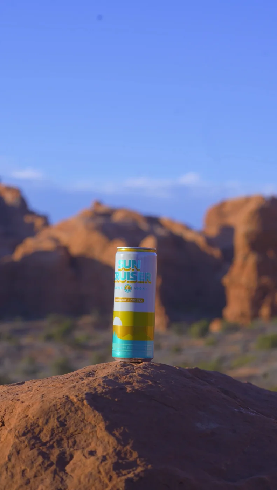
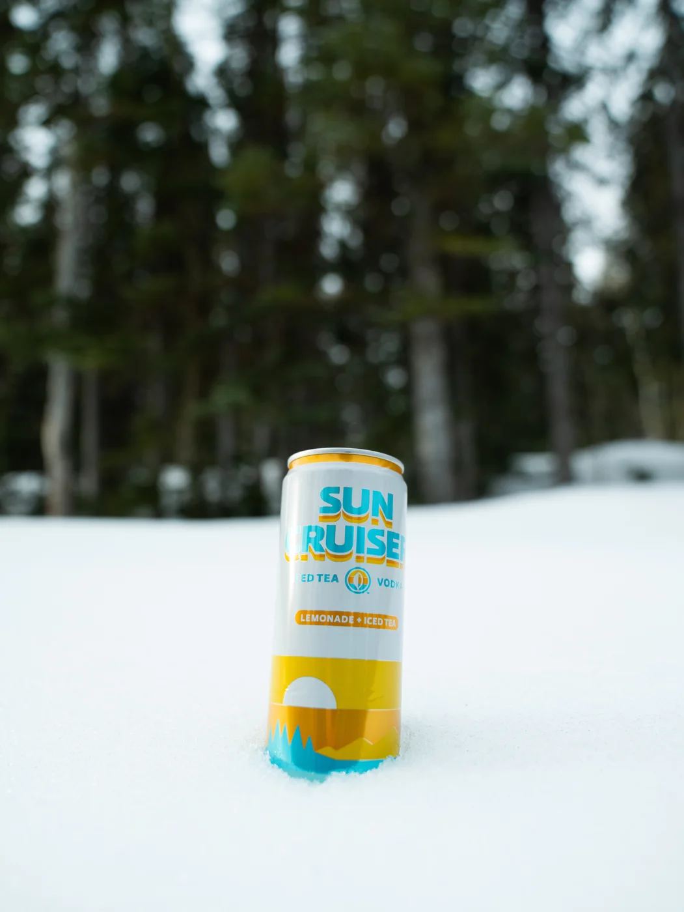
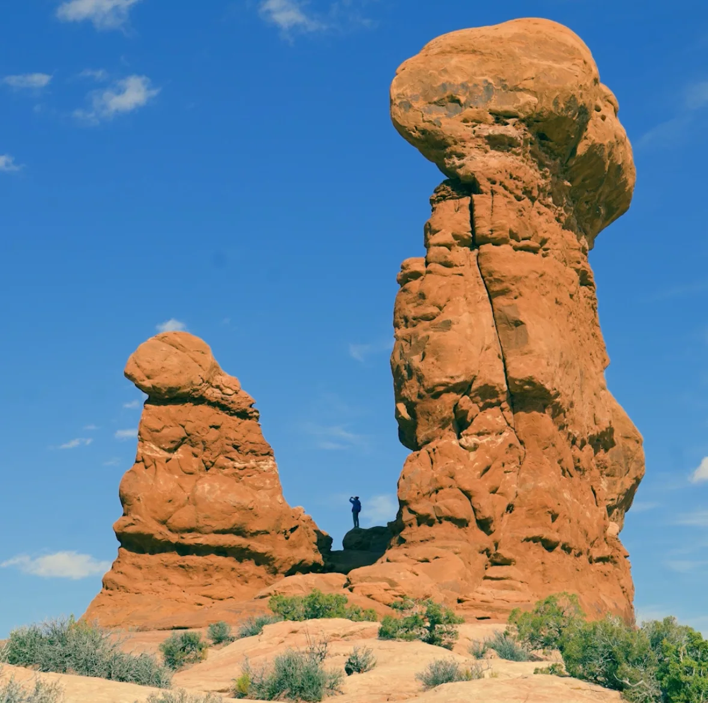
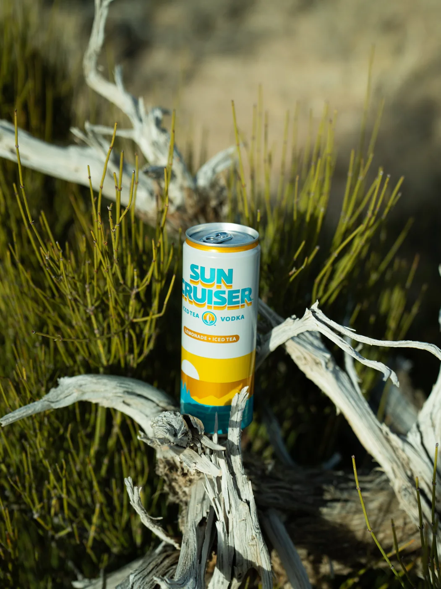
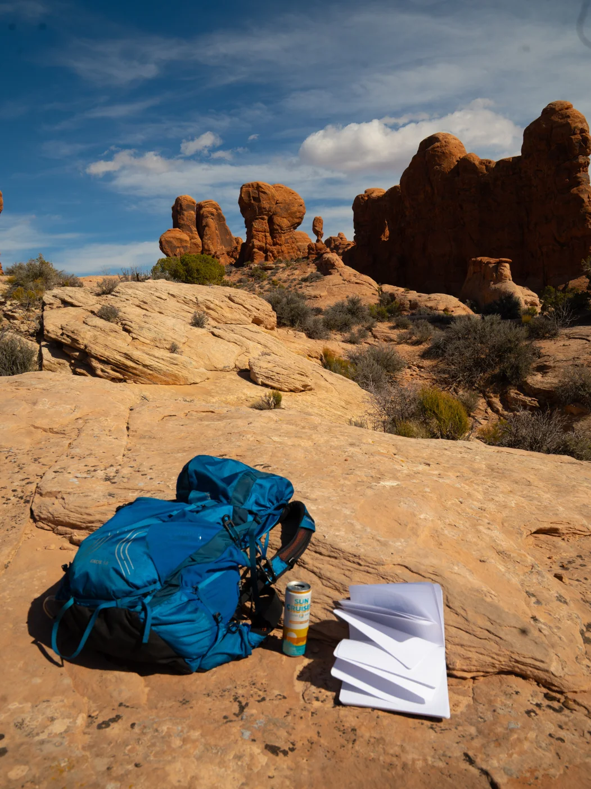

Sun Cruiser
Sun Cruiser partnered with us to showcase their classic iced tea drink. Their team wanted us to focus on making Sun Cruiser the clear drink of choice no matter where you are. For this specific shoot that you can see below, we went to many different locations showcasing the cans. We had a great time working with the Sun Cruisers team and for them trusting us to promote their product through a campaign centered around Sun Cruiser’s main tagline — Let the good times cruise, because ultimately, what beats an ice cold Sun Cruiser on a hot day? Nothing.




